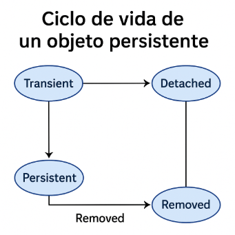

Introducción¶
El problema del desajuste objeto-relacional
Los programas orientados a objetos (como los escritos en Kotlin o Java) utilizan clases y objetos, mientras que las bases de datos relacionales utilizan tablas, filas y columnas. Este desajuste genera dificultades al convertir entre ambos modelos:
- ¿Cómo representar relaciones entre objetos en tablas?
- ¿Cómo convertir un objeto con atributos complejos en un registro de base de datos?
- ¿Cómo mantener sincronizados los cambios?
Un ORM (Object-Relational Mapping) es una herramienta que automatiza el proceso de mapeo entre objetos del lenguaje de programación y tablas de la base de datos.
Ventajas del uso de un ORM
- ✅ Reduce la necesidad de escribir SQL manualmente
- ✅ Facilita el mantenimiento y evolución del código
- ✅ Permite trabajar directamente con objetos en el lenguaje nativo (Kotlin/Java)
- ✅ Facilita el uso de transacciones y validaciones
Principales herramientas ORM en entornos Java/Kotlin
| Herramienta | Descripción breve |
|---|---|
| Hibernate | El ORM más popular en el ecosistema Java. Implementa la especificación JPA. |
| Spring Data JPA | Extensión de Spring que simplifica aún más el trabajo con JPA mediante repositorios automáticos. Ideal para proyectos modernos con Kotlin. |
JPA (Java Persistence API) es una especificación estándar de Java que define cómo se deben mapear objetos Java (o Kotlin) a tablas de bases de datos relacionales. Es decir, permite gestionar la persistencia de datos de forma orientada a objetos, sin necesidad de escribir SQL directamente. Para usarla necesitas una implementación, como Hibernate, EclipseLink, o Spring Data JPA.
Ciclo de vida de un objeto persistente
El ciclo de vida de un objeto persistente describe las etapas por las que pasa un objeto que está vinculado a una base de datos cuando usamos una herramienta ORM (como JPA o Hibernate).
Fases principales:
| Fase | Descripción |
|---|---|
| Transient | El objeto existe en memoria pero no está asociado a ninguna BD. |
| Persistent | El objeto está asociado a una sesión/conexión y se guarda en la BD. |
| Detached | El objeto estuvo asociado, pero ya no lo está (se ha cerrado la sesión). |
| Removed (opcional) | El objeto está marcado para eliminarse de la BD. |

1- Transient (transitorio):
- Creas el objeto con new o su constructor.
- Aún no está en la base de datos.
- Ejemplo: val prod = Producto("001", "Tornillos")
2- Persistent (persistente):
- Usas persist() o save() → el objeto se guarda en la BD.
- Está siendo seguido por el ORM.
- Cambios en el objeto se sincronizan con la BD automáticamente.
3- Detached (desvinculado):
- El objeto ya fue guardado, pero se cerró la sesión/EntityManager.
- Aún puedes usarlo en memoria, pero ya no está sincronizado con la BD.
4- Removed (eliminado):
- Se marca con remove() → está pendiente de borrarse de la BD.
- Se borra cuando se hace commit().